Префектура Хёго · Кобе, Арима · онсэн и рёкан
Онсэн Арима и рёкан «Тосэн Госёбо»: древняя вода и завтрак в три приёма
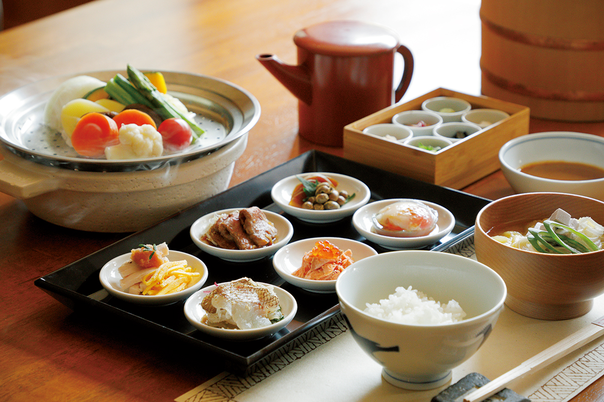
Онсэн Арима на севере Кобе считается одним из трёх знаменитых онсэнов Японии, и его история уходит в глубь веков. Здесь же стоит рёкан «Тосэн Госёбо», который принимает гостей около 800 лет и до сих пор придумывает что-то новое, начиная с завтрака.
Онсэн
Арима: вода, которая шла сюда 6 миллионов лет
Онсэн Арима упоминается уже в «Нихон сёки», древнейшей официальной хронике Японии. По легенде, источники открыли боги Онамути и Сукунахикона, а широкую славу Арима получила в первой половине VII века, когда здесь останавливался император Дзёмэй (правил в 629–641 годах).
Потом были стихийные бедствия и войны, и курорт не раз приходил в полное запустение. Возрождали его трое, которых здесь называют «тремя благодетелями Аримы»: монах Гёки (668–749), проповедник и строитель, монах Нинсай и Хидэёси Тоётоми (1537–1598), полководец, объединивший Японию в конце XVI века. Благодаря их поддержке Арима снова ожила и сегодня принимает и японцев, и гостей со всего мира.
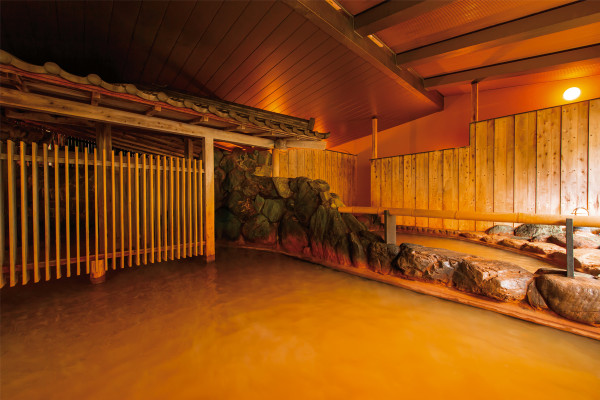
Самое удивительное в Ариме связано с геологией. В Японии много вулканов, но в регионе Кинки, где находится Арима, их нет. Откуда тогда горячая вода? Ответ ведёт к Филиппинам. Филиппинская плита уходит под Евразийскую и затягивает с собой морскую воду, а в Ариме эта вода выходит на поверхность уже горячим источником. Путь от моря до купальни занимает больше 6 миллионов лет. Если помнить об этом, сидя в горячей воде, купание становится особенным.
Рёкан
«Тосэн Госёбо»: хороший рёкан узнают по завтраку
Об этом рёкане рассказывает писатель, который много лет пишет эссе о путешествиях, еде и японских гостиницах и объездил лучшие рёканы страны. По его словам, вечером в хорошем рёкане вкусно кормят по определению, а настоящий класс виден утром.
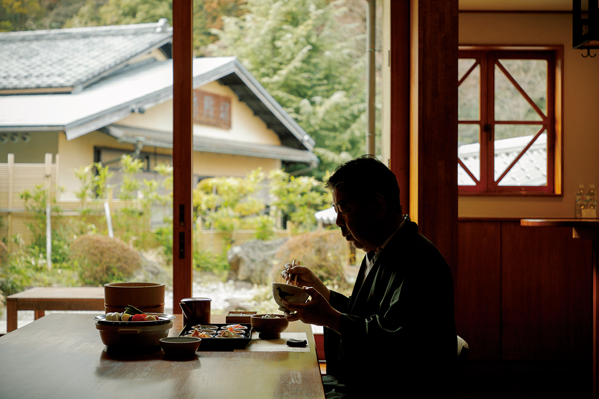
«В поездке завтрак всегда кажется вкуснее, и все любители путешествий признаются, что едят утром слишком много. Причина простая: в рёкане его готовят с душой. Дома мы завтракаем по привычке, почти не замечая еды, а в гостинице завтрак завершает ночь и становится одной из главных радостей»
писатель
Ужин в хорошем рёкане подают по одному блюду, а к завтраку обычно выставляют всё сразу. Поэтому важен общий вид стола: хочется оглядеть его и с удовольствием помедлить, с чего начать. Именно таким, по словам писателя, получился новый завтрак «Тосэн Госёбо».
Завтрак
«Аримабуси»: одна миска, три вкуса
На поднос ставят шесть закусок к рису: говядину, тушённую в соевом соусе с сахаром, дорадо в кунжутном соусе, яйцо в мисо, курицу с яичными нитями и другие. К ним шесть приправ. Есть всё это предлагают в три приёма: сначала просто положить закуску на рис, потом посыпать приправой, а в конце залить рис бульоном. Похоже на нагойское «хицумабуси», только здесь блюдо назвали «аримабуси», и это название может носить только Арима.
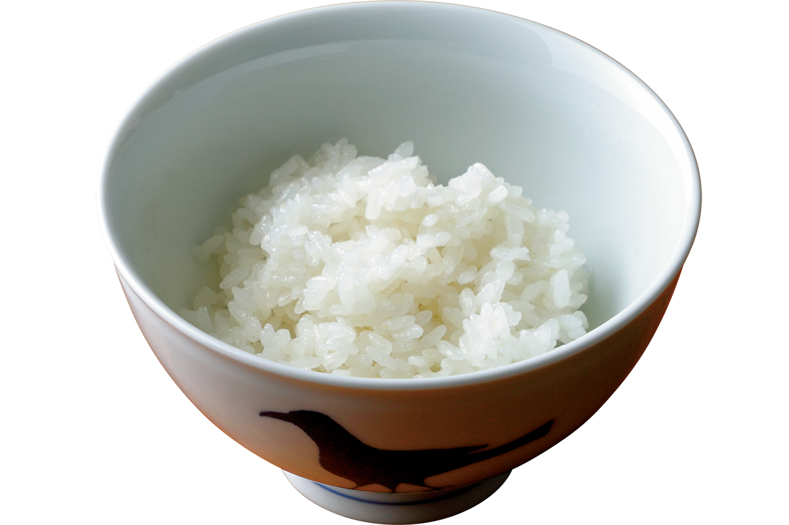
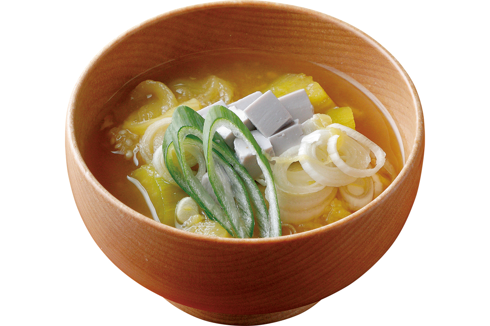
Писатель начал с говядины: всё-таки это родина «Кобе-биф». Мясо, приготовленное как для сукияки, он положил на только что сваренный рис.
«Даже совестно: можно ли так роскошествовать с утра? Настолько это вкусно»
писатель
На втором круге он добавил к мясу свежий васаби, и острота освежила вкус. Затем дорадо из Акаси, вымоченный в кунжутном соусе: сначала с рисом, потом с морскими водорослями нори, в конце с бульоном. По его словам, с таким завтраком добавки попросит даже тот, кто накануне перебрал.
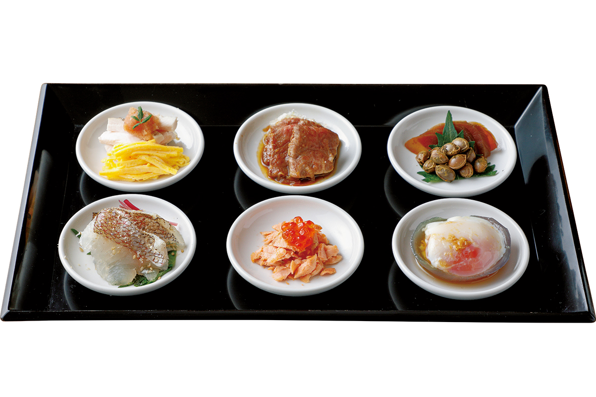
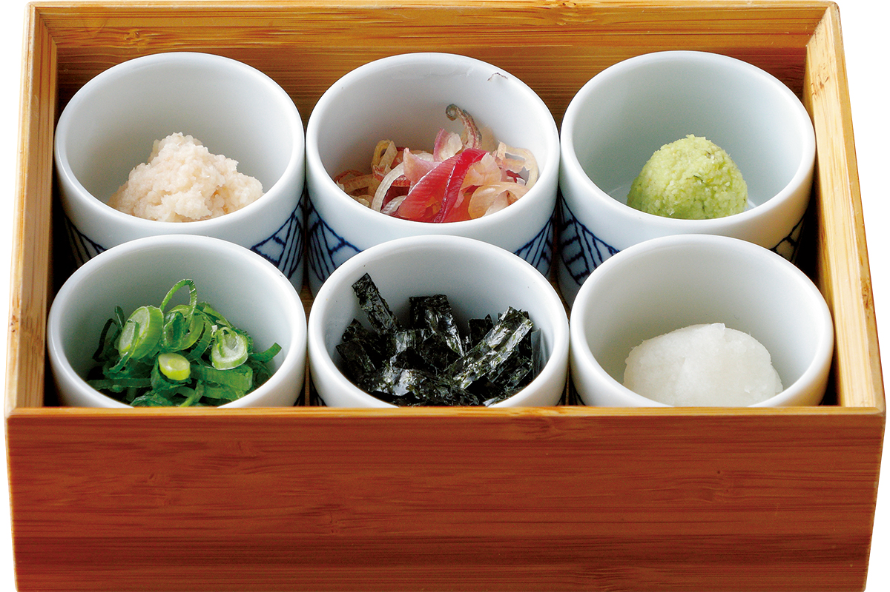
Шесть закусок и шесть приправ дают столько сочетаний, что сосчитать их трудно. Писатель уверен, что у этого завтрака скоро появятся подражатели, но имя «аримабуси» им не достанется.
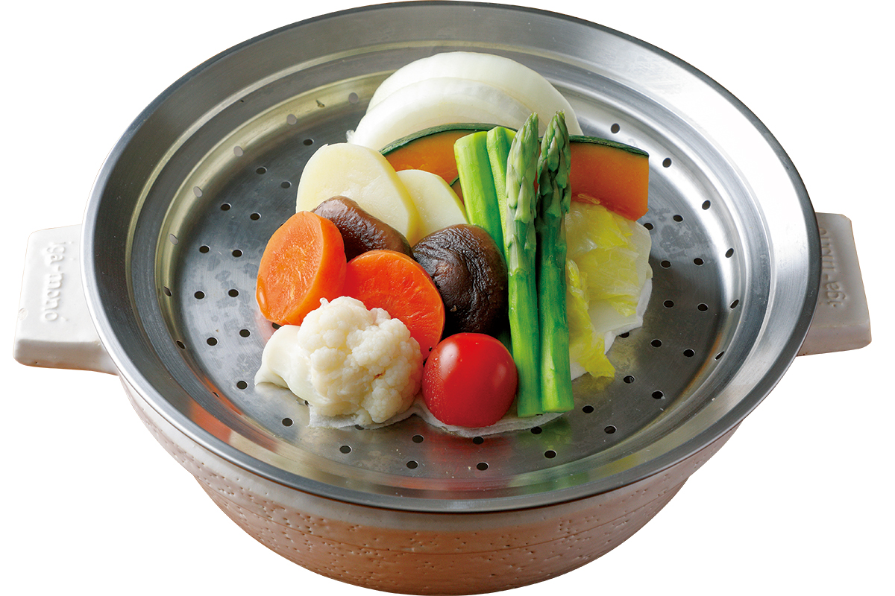
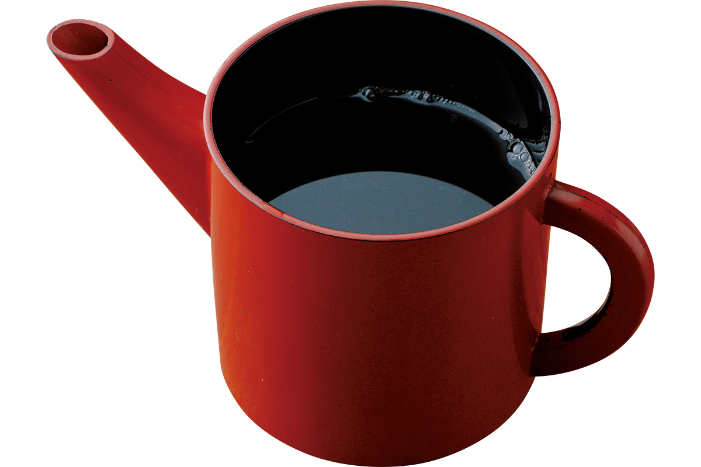
Номера
Люкс на четыре поколения и онсэн на крыше
«Тосэн Госёбо» не стоит на месте. Здесь появились люксы премиум-класса с большой собственной купальней, где удобно даже семье из четырёх поколений, а на крыше устроили открытую купальню, куда ходят как в бассейн.
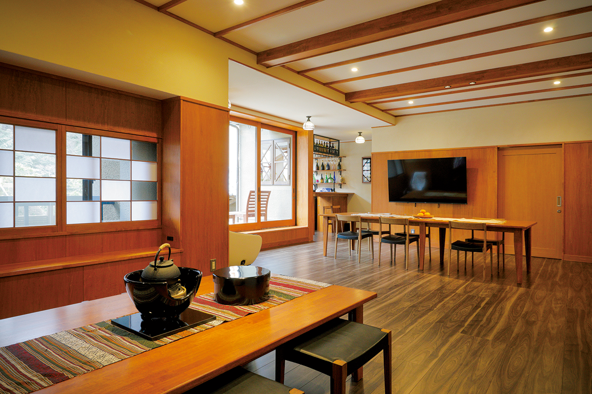
В люксе живут до пяти человек. Можно снять ещё один номер и приехать несколькими семьями, а в люксе собираться всем вместе за едой.
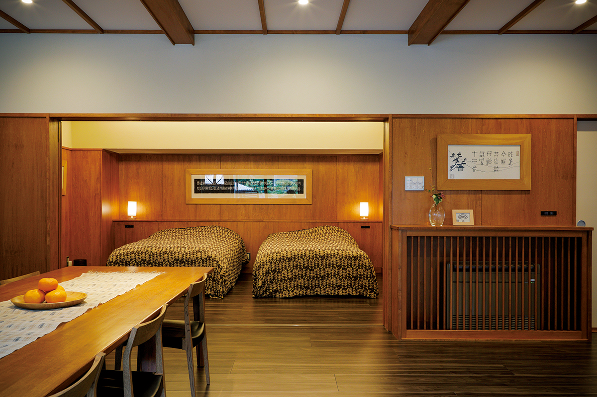
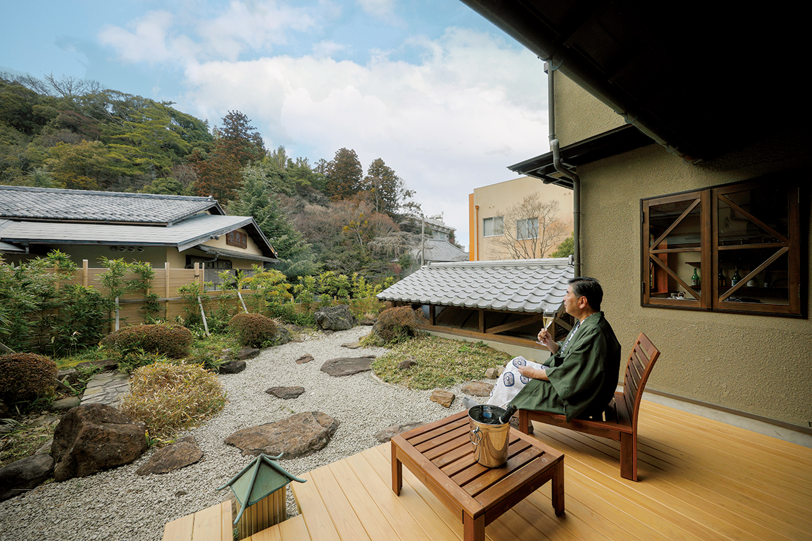
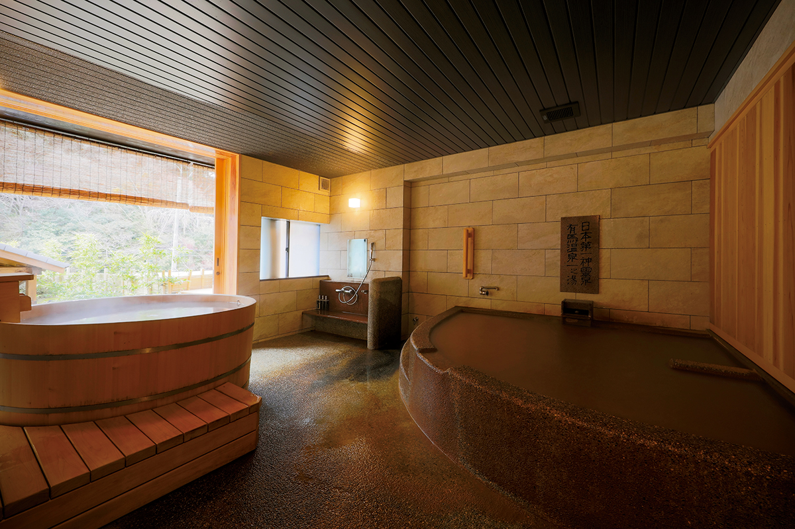
Купальню на крыше придумал владелец рёкана, человек, полный идей. Вместо модного бара на крыше он сделал онсэн на крыше: в нём купаются в купальниках, мужчины и женщины вместе, смотрят на город Арима и пьют сакэ. Купальня частная: её занимают одной компанией.
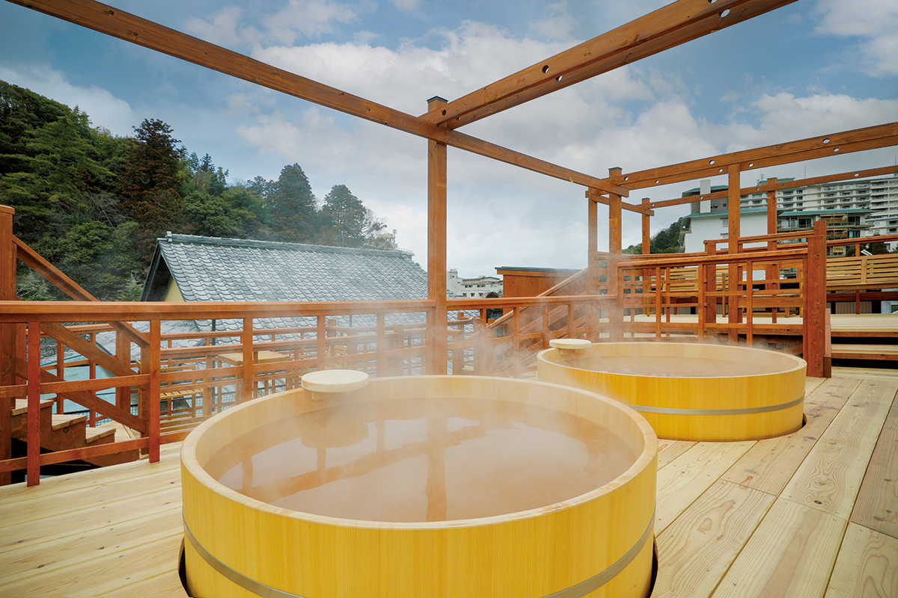
В обычных номерах завтракают в общем обеденном зале, а в люксах с гостиной его приносят в номер. Завтрак подают в две смены, в 8:00 или в 8:30.
Ужин
Дары моря и «Кобе-биф»
Ужин в рёкане собран из местных продуктов: камбала и рыба сима-адзи из Акаси, сардины, местная говядина. Писатель подводит итог коротко:
«Рёкан, где подают прекрасный завтрак, без сомнения хороший рёкан»
писатель
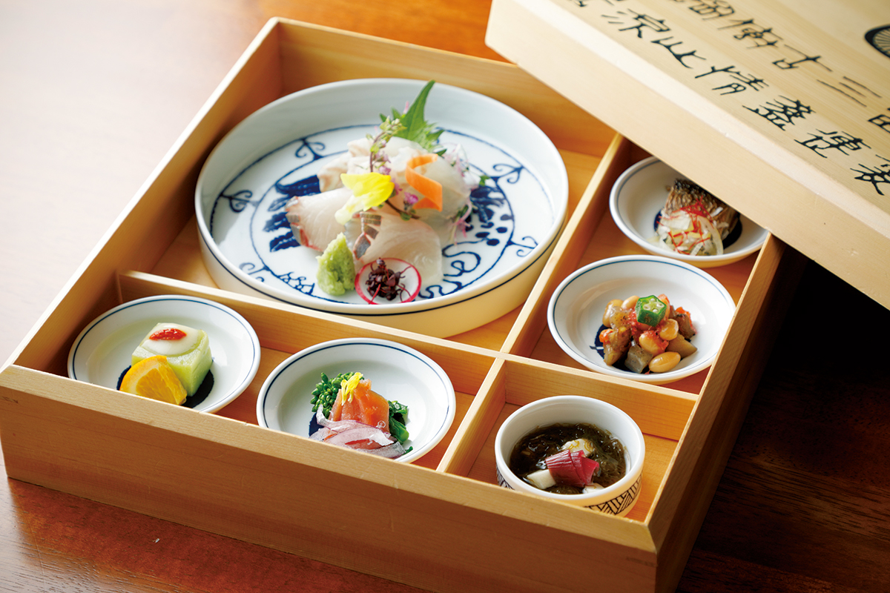
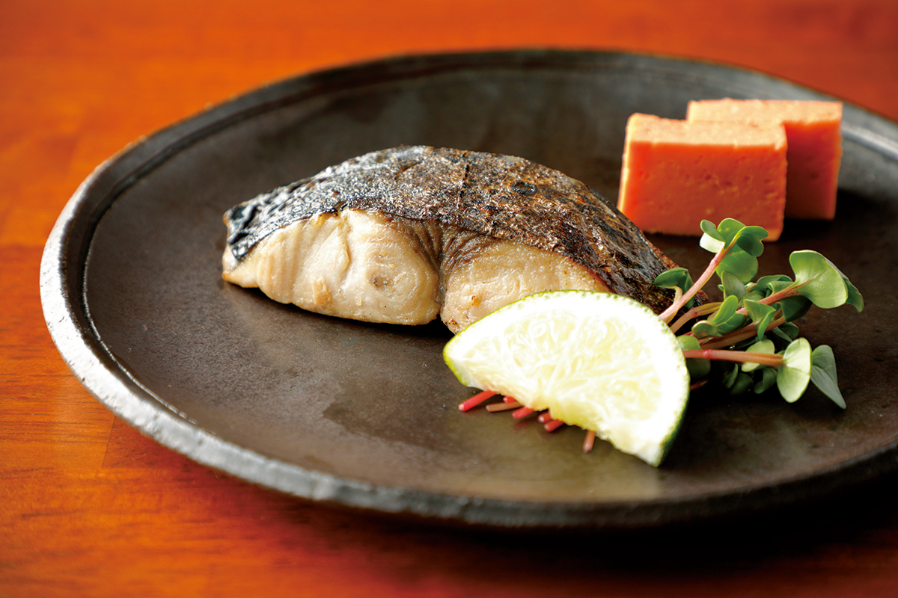
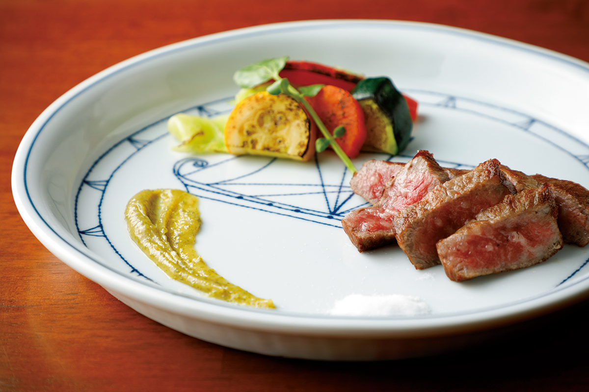
«Тосэн Госёбо»
- Адрес
- префектура Хёго, Кобе, район Кита, Арима-тё, 858
- Телефон
- +81 78-904-0551
- Цены / Вход
- от 36 100 иен с человека с ужином и завтраком, люкс от 85 000 иен (с налогом и сервисным сбором)
- Номера
- 14 номеров и 2 люкса
- Заезд / выезд
- 15:00 / 11:00
- Сайт
- goshoboh.com
Фото: Ко Миядзи.